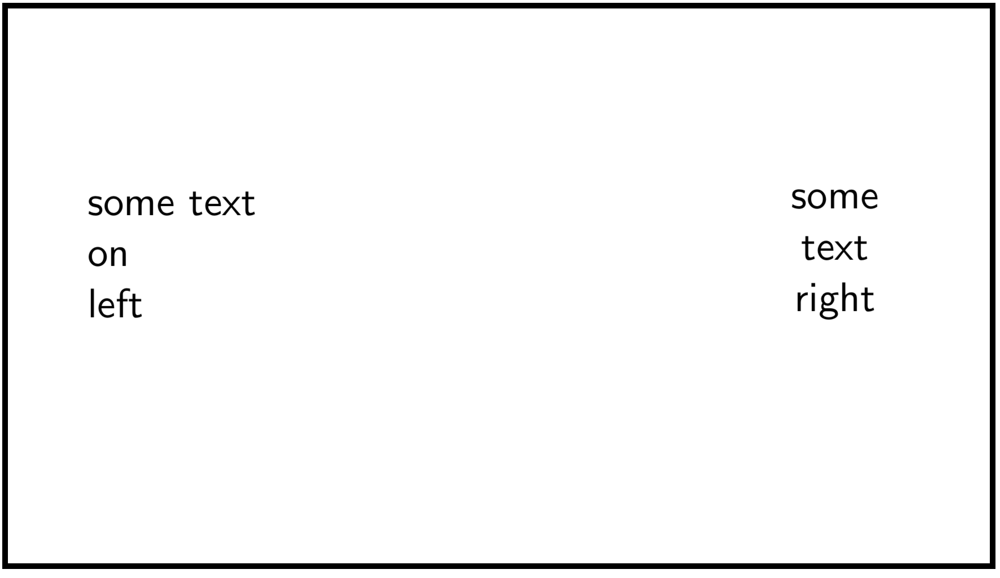

BEAMER
Styling features
Themes
You can set different themes to your presentation and there are lots of them avaliable.
There is also the possibilty to change the colors, outer themes or inner themes. The variaty of themes are the following:

And the line you can add to your code to enable che change of the theme is this:
CODE
\usetheme{Berlin}Colors
You can set different color to your presentation and there are lots of them avaliable.
The variaty of colors are the following:

Of course there is the possibility to set your own color:
CODE
\definecolor{banana}{RGB}{255, 225, 53}(Have a look at our page xcolor package and look the color set that you have got available or how to set your own color in more details!)
Fonts
Of course there is the possibility to change the font style to a specific part of your presentation:
CODE
\setbeamerfont{subtitle}{family=\rm}Animations
Animations is what is necessary to have a good, smooth and of course distinct presentation. It is possible to specify appearance and disappearance of text, this is intended to provide a visual effect in the presentation.
An animation that is very basic but effective is the pause effect that works with the keys pressed and the text will be appering or even disappearing:
CODE
{
\begin{frame}
First text showing \pause
First and Second text showing\pause
All text
\end{frame}
}
This is another example of animation and will result in text displaying in different situations:
CODE
\begin{itemize}
\item Text showing
\item<1-> First
\item<2-> Second
\item<1-> First also
\only<1-1> First only for the loading time of the slide
\end{itemize}
Columns, blocks and other options
There is a way to insert columns in a presentation like the example here written:
CODE
\begin{frame}
\begin{columns}
\begin{column}{0.3\textwidth}
some text\\
on\\
left
\end{column}
\begin{column}{0.3\textwidth}
\centering
some\\
text\\
right
\end{column}
\end{columns}
\end{frame}